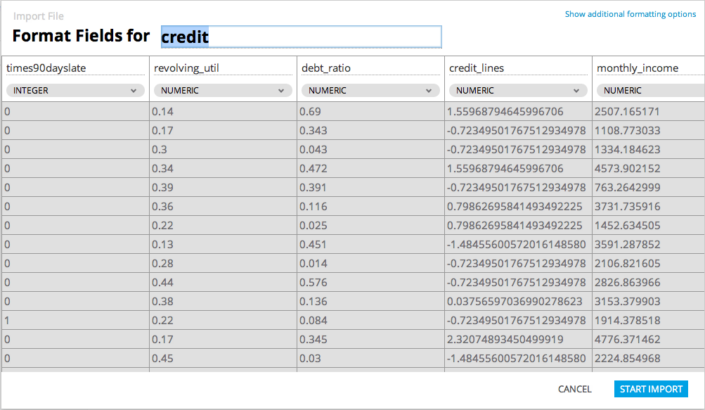

Import to Database
Users with the modeler role can upload and import datasets though any database connection. The following steps are a guide to uploading and importing data in Alpine.
- Navigate to a schema within a database connection in the Data Explorer and click the upload data button.
- Chose a file from the local disk. When the file finishes uploading click 'Next: Format Fields'.
- The following dialog displays a preview of the dataset to be imported. The user can specify the name of the table to be create in the database.
- Alpine will guess the delimiter used in the file and the data type of each column. The user can override the recommendation if necessary.
- By clicking 'Show additional formatting options' the user can specify the delimiter, the escape, and the quote character used by the file. The user can specify if the uploaded file contains a header. For each column, the user can specify the name, data type, to include the column, and if rows with null values in the column should be imported.
- To begin the import click 'Start Import'.
- When the import is complete, the user will be notified by a toast style message.
